Unless noted otherwise, every result above uses unit stride (incx = incy = 1) — the normal case, and the coalesced, best-case GPU access pattern. Real usage sometimes passes a non-unit stride (e.g. operating on a row or column of a larger matrix, where incx = lda), which breaks memory coalescing and costs measurably more. This section sweeps a few representative strides to characterize that cost separately, collapsed below by default — expand a stride to see its table and chart.
stride.sger.c — CUDA / cuBLAS stride-sweep reference script
Lda sweep
Unless noted otherwise, every result above uses a tight lda (no padding). Padding the row stride changes throughput here — the exact mechanism and shape of that effect is routine-specific — collapsed below by default, expand a pad value to see its table and chart.
lda.sger.c — CUDA / cuBLAS lda-sweep reference script
alpha sweep
alpha is a plain multiplier here: the kernel applies it unconditionally, with no branch for any particular value. A flat sweep is therefore the expected result and is recorded as a measured null. Levels include 0, 1 and a denormal-producing 1e-38 because those are the values a shader could special-case if it ever grew a branch — and strsm is the routine where one does.
alpha.sger.c — CUDA / cuBLAS alpha-sweep reference script
layout sweep
Column-major swaps the effective m/n and flips the transpose flag internally, changing which axis is contiguous and therefore how the matrix reads coalesce. wgblas-only: cuBLAS is column-major and has no layout argument, so there is no reference curve to compare against.
Benchmark results for sger on Nvidia Geforce Gtx 1650.
Nvidia Geforce Gtx 1650 — wgblas vs cuBLAS
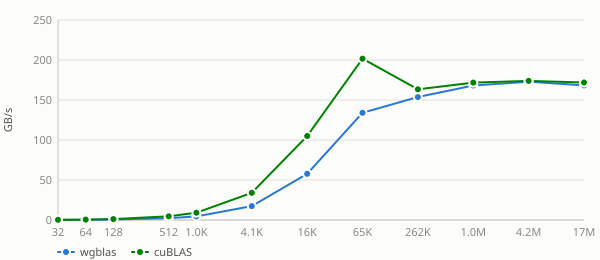
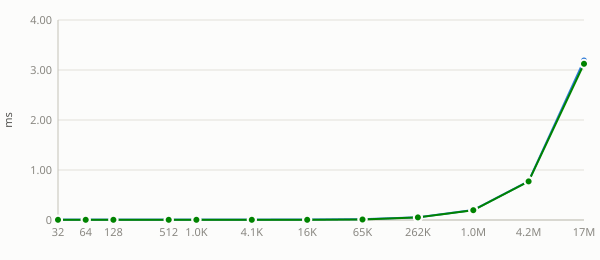
See also
Stride sweep
Unless noted otherwise, every result above uses unit stride (
incx = incy = 1) — the normal case, and the coalesced, best-case GPU access pattern. Real usage sometimes passes a non-unit stride (e.g. operating on a row or column of a larger matrix, whereincx = lda), which breaks memory coalescing and costs measurably more. This section sweeps a few representative strides to characterize that cost separately, collapsed below by default — expand a stride to see its table and chart.Nvidia Geforce Gtx 1650 — stride = 4
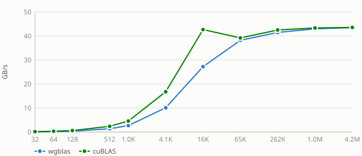
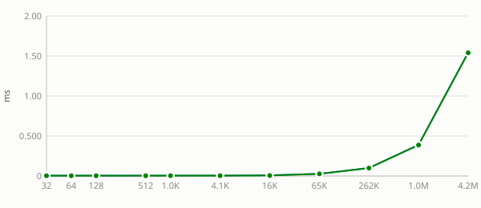
Nvidia Geforce Gtx 1650 — stride = 32
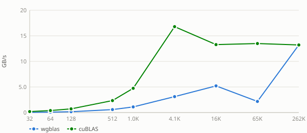
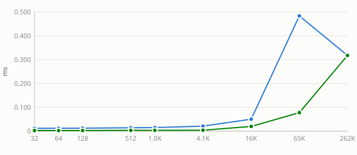
Nvidia Geforce Gtx 1650 — stride = 256
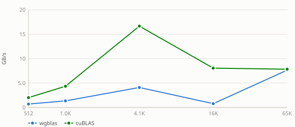
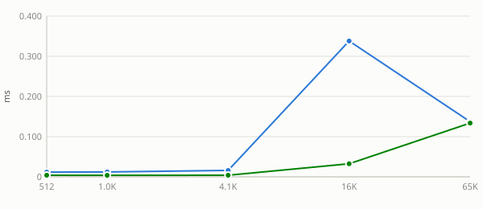
See also:
Lda sweep
Unless noted otherwise, every result above uses a tight
lda(no padding). Padding the row stride changes throughput here — the exact mechanism and shape of that effect is routine-specific — collapsed below by default, expand apadvalue to see its table and chart.Nvidia Geforce Gtx 1650 — pad = 0
Nvidia Geforce Gtx 1650 — pad = 1
Nvidia Geforce Gtx 1650 — pad = 8
Nvidia Geforce Gtx 1650 — pad = 16
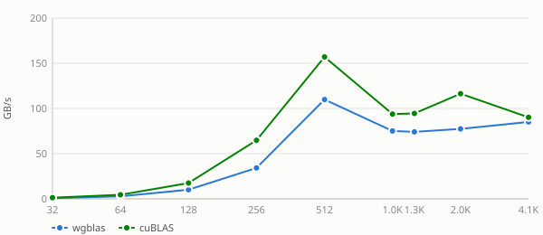
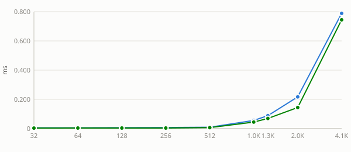
Nvidia Geforce Gtx 1650 — pad = 32
Nvidia Geforce Gtx 1650 — pad = 48
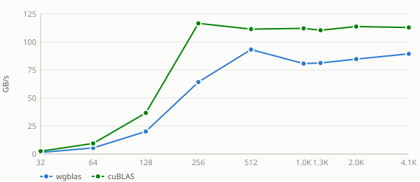
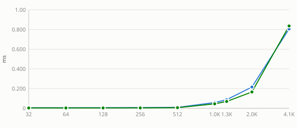
Nvidia Geforce Gtx 1650 — pad = 64
Nvidia Geforce Gtx 1650 — pad = 128
See also:
alpha sweep
alphais a plain multiplier here: the kernel applies it unconditionally, with no branch for any particular value. A flat sweep is therefore the expected result and is recorded as a measured null. Levels include0,1and a denormal-producing1e-38because those are the values a shader could special-case if it ever grew a branch — andstrsmis the routine where one does.Nvidia Geforce Gtx 1650 — alpha = -3.75
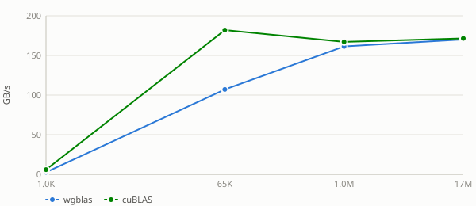
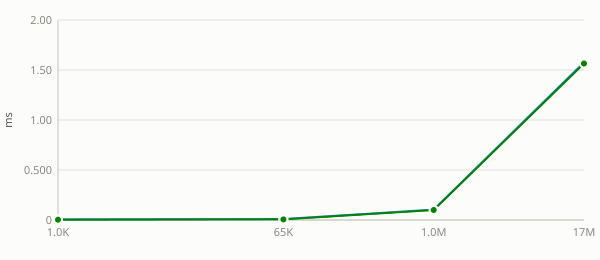
Nvidia Geforce Gtx 1650 — alpha = 0
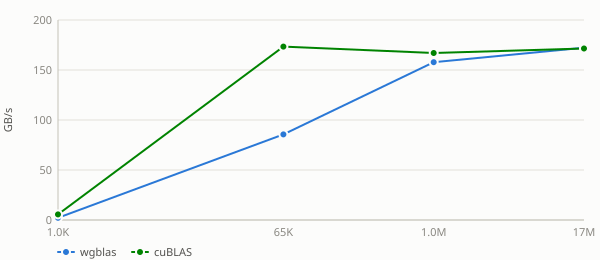
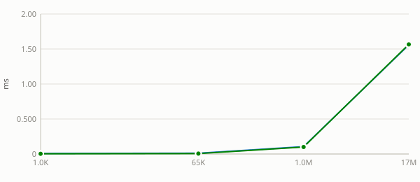
Nvidia Geforce Gtx 1650 — alpha = 1e-38
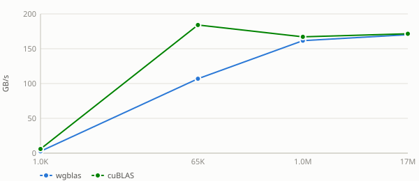
Nvidia Geforce Gtx 1650 — alpha = 1
Nvidia Geforce Gtx 1650 — alpha = 2.5
See also:
layout sweep
Column-major swaps the effective
m/nand flips the transpose flag internally, changing which axis is contiguous and therefore how the matrix reads coalesce. wgblas-only: cuBLAS is column-major and has no layout argument, so there is no reference curve to compare against.Nvidia Geforce Gtx 1650 — layout = column-major
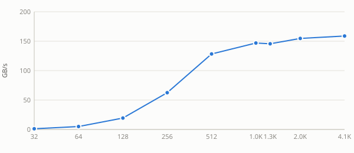
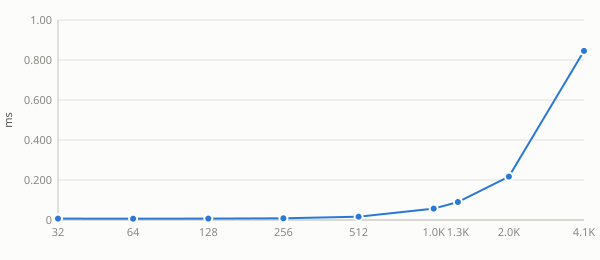
Nvidia Geforce Gtx 1650 — layout = row-major
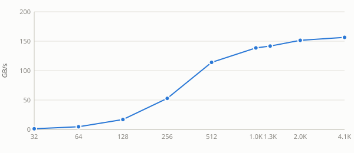
See also: